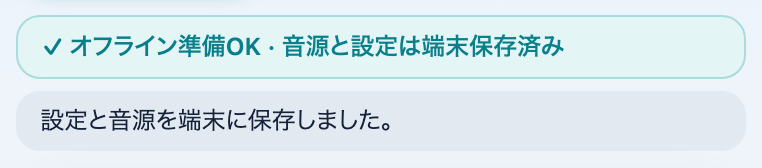
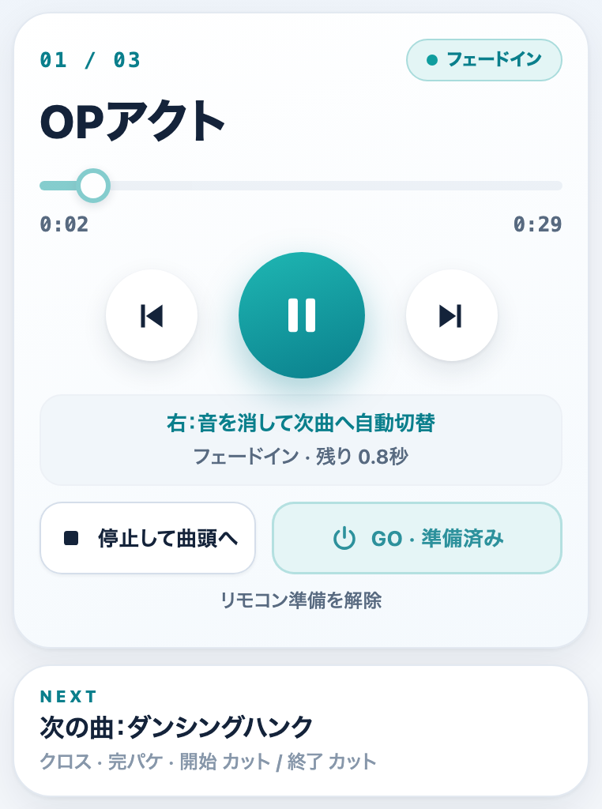
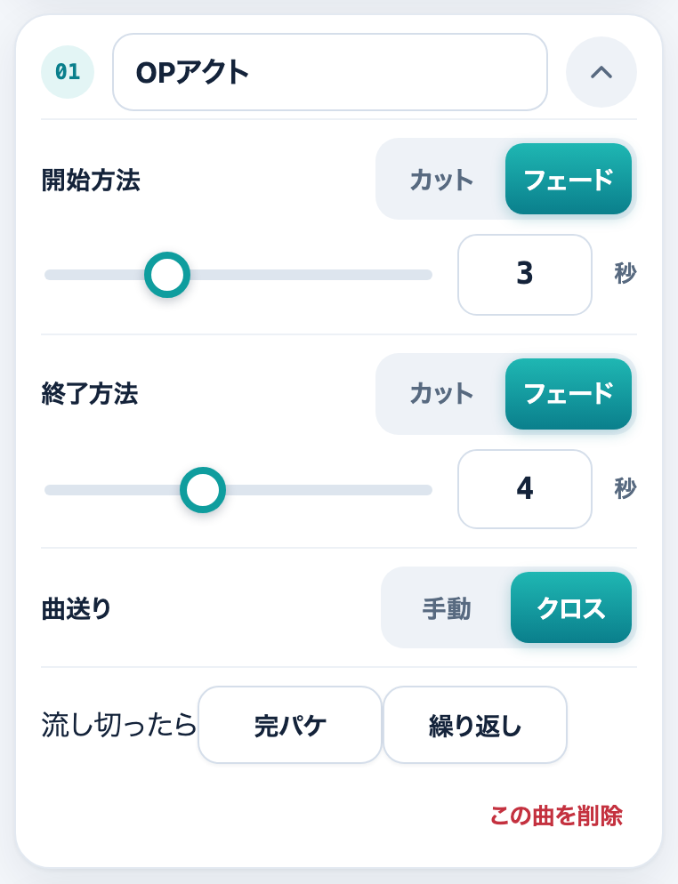
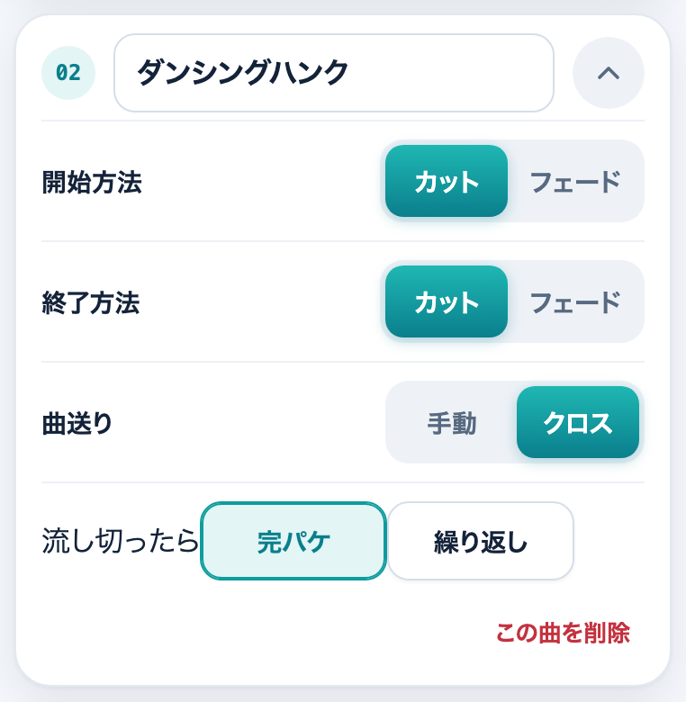
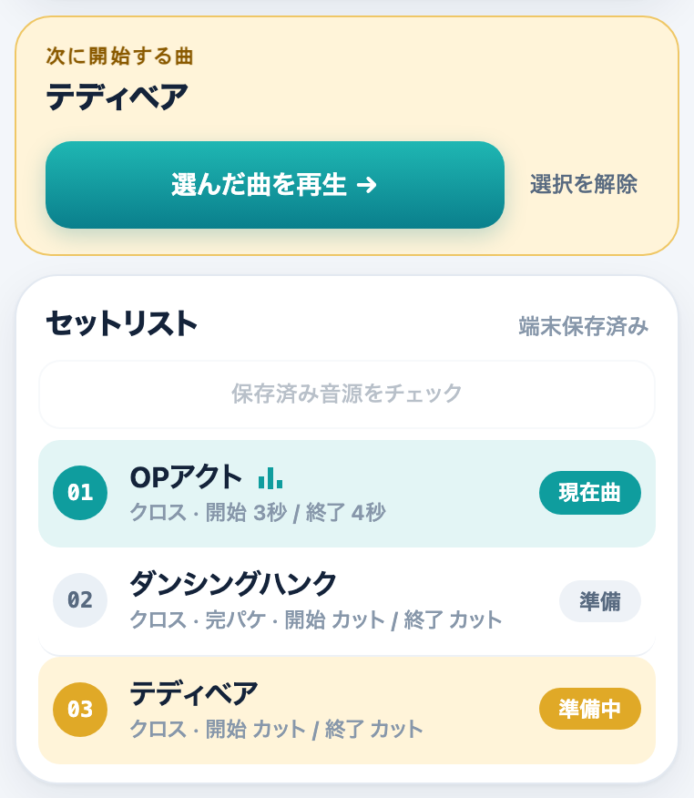
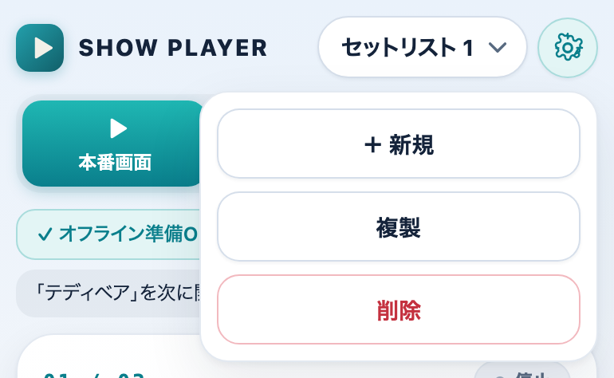
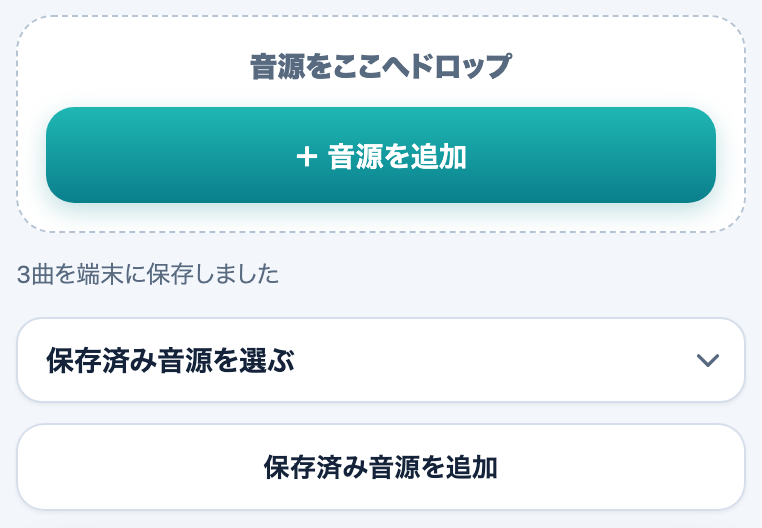
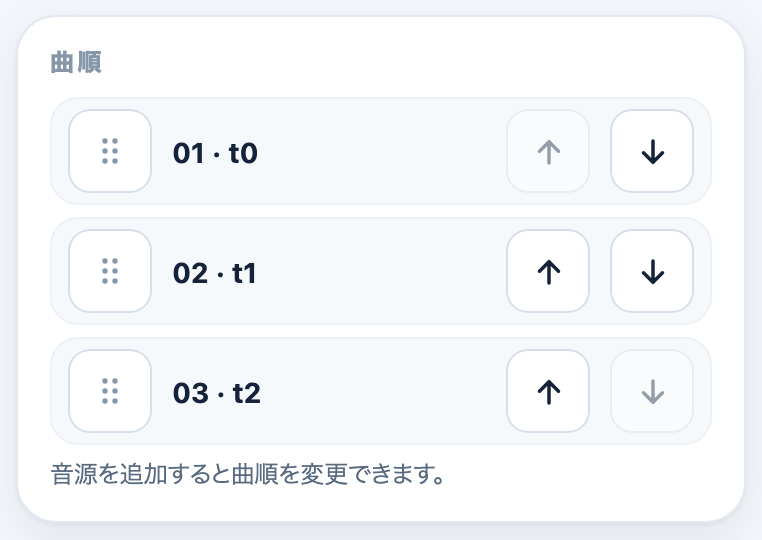
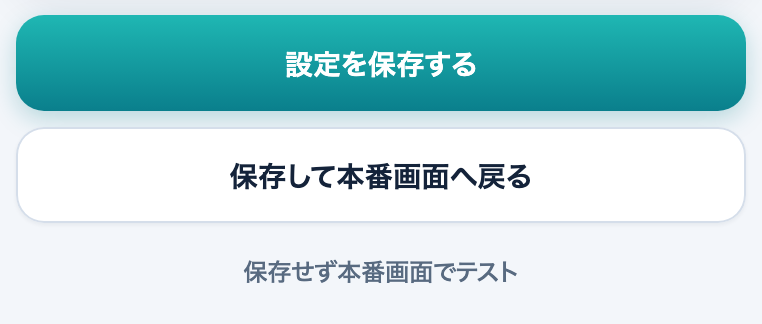

使い方マニュアル
ショーの音楽を、リモコン1つで流すためのアプリです。画面には操作に必要なものだけを置き、説明はここにまとめています。画像は実際の画面です（曲名やフェードの数字はサンプル）。
1. 本番前の準備
- オンラインで開く。 最初の1回はネットにつないでアプリを開きます。画面をオフラインで使えるように保存します。
- 音源を取り込む。 「曲・フェード設定」で音源を追加します（くわしくは6. セットリストと音源の管理）。
- 保存する。 「設定を保存する」を押します。
- 本番画面で状態を見る。 下の画像の3つの印と帯が ✓ になっていれば準備完了です。
- ホーム画面に追加する。 iPhone：通常のSafariで開く → 共有 → 「ホーム画面に追加」。Mac：Safariは「ファイル → Dockに追加」、Chromeは「アプリとしてインストール」。起動時に、iPhone向けの再生方式が自動で選ばれます。
- 機内モードで通し確認する。 手順は7. オフライン・機内モードの確認。

| 印 | 意味 |
|---|---|
| 音源・設定保存 | 取り込んだ音源と設定が、この端末に保存されている |
| 画面のオフライン保存 | アプリの画面がオフライン用に保存されている |
| GO準備 | GOを押して、リモコンの準備ができている |
帯に出る主なメッセージ：「画面をオフライン用に保存中（最初はネット接続が必要）」はオンラインのまま少し待つ。「音源が見つかりません。再取り込みしてください」は音源を取り込み直す。「未確認の音源があります」は、音源チェックを押す。
2. 本番画面の見方

| 表示 | 内容 |
|---|---|
| 01 / 02 | 今の曲の番号 / 曲数 |
| 右上の丸い表示 | 状態（停止・再生中・一時停止・フェードイン・フェードアウト・無音待機・曲終了 など） |
| 大きな曲名 | 今の曲の名前（長い名前は2行まで表示） |
| NEXT | 次に流れる曲と、その曲の設定（クロス・開始／終了の秒数）。準備した曲があれば「次に開始（準備中）」と出ます |
| バー・時間 | 再生位置。ドラッグかタップで位置を変えられます（離すと反映）。フェード中・無音待機中は変えられません |
| ｜◀ ／ 中央 ／ ▶｜ | 画面のボタンもリモコンの左・中央・右と同じ動きをします |
| 右：… | 今右を押すと何が起きるかの表示。状態によって変わります。横には、その曲の設定（手動・クロス・完パケ・繰り返し、開始・終了の秒数）、フェード中は残り時間が出ます |
| 停止して曲頭へ | 止めて、今の曲の頭に戻します。準備した曲も解除します |
| GO | 下で説明します |
| リモコン準備を解除 | GOで準備したリモコンの受付をやめます |
GO（アプリを開くたびに最初に1回）
GOを押すと、音を出さずに音声とリモコンの準備をします。アプリを開くたびに、最初に1回押してください。「GO · 準備済み」と出れば準備完了で、押し直してもかまいません。電話や他のアプリの音で中断されたときは、いったん停止してGOを押し直します。
3. リモコンの操作
基準にしているリモコンは、ELECOMのJC-VRR04BKです。他の機種は、実際に試して確認してください。
| ボタン | 操作 |
|---|---|
| 右 | 今の曲を、その曲の終了設定で終わらせます。曲送りが「手動」なら、1回目で終了して無音で待機、2回目で次の曲が始まります。「クロス」なら1回で終了して、そのまま次の曲を始めます。終了フェードの最中にもう一度右を押すと、すぐ終了して次の曲を始めます |
| 左 | 1回目：今の曲の頭に戻ります。再生中なら再生を続け、一時停止中・待機中は止めたままです。続けて左を押すと前の曲の頭。時間では解除されません（曲が進んでも、次の左は前の曲です）。右・中央・停止を押すと「次の左は前の曲」の状態は解除されます。最初の曲より前には戻りません |
| 中央 | 位置を保ったまま一時停止、もう一度で再開。フェード中は、音量とフェードも止まり、残りの秒数から再開します。無音待機中の中央は待機のままです（次の曲は右） |
| 上・下 | 端末の音量を上げ下げします。フェードとは別です |
リモコンから再生・一時停止のどちらが届いても、中央の切り替えとして扱います。連打した操作は捨てず、順番に処理します。
曲が最後まで自然に終わったときは、止まって「右を押すまで次曲は鳴りません」と出ます。例外は、設定の「完パケ」「繰り返し」を入れた曲です。最後の曲の次に、先頭へは戻りません。
4. 曲ごとの設定
「曲・フェード設定」で、曲ごとに設定します。iPhoneでは、曲ごとのカードを「∨」で開閉できます（最初は今の曲だけが開いています）。Macでは、すべて開いたままです。「カット｜フェード」「手動｜クロス」の切り替えは、選ばれている側が青緑で表示されます。選びたい側の文字（四角）を、iPhoneは1回タップ、Macは1回クリックすると、その側が選ばれます（選ばれている側を押しても変わりません）。

開始方法・終了方法（カット／フェード）
- 開始方法は、その曲が始まるとき。終了方法は、その曲を右で終わらせるときの設定です。
- 「フェード」にすると秒数の欄が出ます。スライダーは0.1秒刻みで、10秒より長いときは数字を直接入力します。フェードを選んだ曲は、秒数を入力しないと保存できません。
- 「カット」に戻しても、入れた秒数は残ります。初期設定は、開始・終了ともカット、曲送りはクロスです（新しく取り込んだ曲）。すでに保存してある曲の設定は変わりません。
曲送り（手動／クロス）
- 手動：右1回で音を消して待機、もう1回で次の曲を開始。
- クロス：右1回で、終了したあと次の曲を自動で開始。各曲の終了・開始の秒数を使います。音を重ねる本来のクロスフェードではなく、順番に切り替わります。
曲送りは今終わる曲の設定、開始方法は次に始まる曲の設定が使われます。組み合わせは次の8通りです。
| 今の曲の終了 | 曲送り | 次の曲の開始 | 右を押すと |
|---|---|---|---|
| カット | 手動 | カット | 1回で終了・待機、2回目で即開始 |
| カット | 手動 | フェード | 1回で終了・待機、2回目で次曲の秒数をかけて開始 |
| フェード | 手動 | カット | 1回で秒数をかけて終了・待機、2回目で即開始 |
| フェード | 手動 | フェード | 1回で秒数をかけて終了・待機、2回目で次曲の秒数をかけて開始 |
| カット | クロス | カット | 1回で即終了→次曲を即開始 |
| カット | クロス | フェード | 1回で即終了→次曲を秒数をかけて開始 |
| フェード | クロス | カット | 1回で秒数をかけて終了→次曲を即開始 |
| フェード | クロス | フェード | 1回で秒数をかけて終了→次曲を秒数をかけて開始 |
流し切ったら（完パケ／繰り返し）

- 完パケ：曲を最後まで流し、そのまま次の曲へ進みます。次の曲の始まり方は、次の曲の開始設定（カット／フェード）に従います。最後の曲では進まず止まります。
- 繰り返し：曲を最後まで流したら、同じ曲を頭から流し直します。頭の始まり方は、その曲の開始設定に従います。トークが長引いたときに使えます。準備した曲があっても繰り返しが優先で、次の曲へは右で進みます。
- 2つは同時にONにできません（片方をONにすると、もう片方はOFFになります）。両方OFFなら、最後まで流れて止まります。
- 途中で右を押したときは、完パケ・繰り返しでも、その曲の終了設定（カット／フェード）に従って次の曲へ進みます。曲の設定は変わりません。
- 右を押して終了フェードの最中に曲が終わった場合や、停止・左・設定画面を開いたときは、自動では進みません。
5. 次に流す曲を準備する

- セットリストの曲をタップすると、「次に開始する曲」として準備されます。今の音は止まりません。タップしても、その曲が再生・一時停止されることはありません。
- 準備した曲は、次の2つで始められます。「選んだ曲を再生 →」を押す（今の曲を止めて、その曲の開始設定で始まります）。または、リモコンの右（通常の次の曲より優先して始まります。手動は2回、クロスは1回）。
- 「選択を解除」か「停止して曲頭へ」で、準備を取り消せます。
- 「保存済み音源をチェック」は、すべての曲の存在と情報を確認します（全曲の通し再生や、破損の完全な検査ではありません）。
6. セットリストと音源の管理
セットリストの切り替え・新規・複製・削除

- 「＋ 新規」「複製」（音源は再利用されます）、「削除」（確認が出ます）。個数に上限はありません。本番中（再生中・一時停止中）は、操作できません。
- リスト名は「曲・フェード設定」の「セットリスト名」で変更します。
音源の取り込み

- iPhone：「＋ 音源を追加」から「ファイル」で複数選択。Mac：Finderなどからまとめて枠へドラッグ＆ドロップ（枠の外へ落としても、画面は切り替わりません）。
- 取り込んだ音源はこの端末の中だけに保存され、アップロードされません。読み込めないファイルは、除外されて表示されます。
- 同じ内容の音源は重複して保存されません。他のリストで使った音源は、「保存済み音源を追加」で再利用できます。
- Apple Musicのライブラリやサブスクの曲を直接取り込むことはできません。権利のある音声ファイルを用意してください。
曲順・曲名・削除

- 曲名は、各曲のカードの名前欄で変えられます。「この曲を削除」で曲をリストから外します。
- 曲を追加・削除・並べ替えるのは、音を止めた設定画面で行います。保存すると、次回もこの順番になります。
保存と、設定画面の動き

- 「設定を保存する」：端末に保存します。保存が終わるまでは「保存済み」にならず、未保存のときは未保存と表示されます。
- 「保存して本番画面へ戻る」「保存せず本番画面でテスト」。
- 設定画面を開くと、音を止めて今の曲と位置を保持します。フェードの途中だったときは、そのフェードは終了します。戻っても自動では再生されません。戻って中央（リモコン）を押すと、保持した位置から、変更後の開始方法で再生されます。
- 設定が不正（たとえばフェードの秒数が空）のときは、保存・開始前に知らせます。
7. オフライン・機内モードの確認
- ネットにつないだ状態で、ホーム画面のアプリを開く。
- 本番画面の上のほうに「オフライン準備OK・音源と設定は端末保存済み」と出ているか確認（準備が整っていない間は、3つの準備の印も出ます）。
- 機内モードにして、Bluetoothだけオンに戻す。
- アプリを完全に閉じて、開き直す。
- GOを押して、リモコンの中央・左右・音量を試す。
- 実際の会場と同じスピーカー・接続で、音が出ることも確認する。
機内モードのままだと、新しい版には更新されません。更新は、オンラインのときに反映されます。
8. 困ったとき・注意
| 症状 | 対処 |
|---|---|
| リモコンが反応しない | アプリを開いたあと、GOを押したか確認。電話などで中断されたときは、停止してGOを押し直す |
| 音が出ない | 端末の音量と、出力先（Bluetooth・スピーカー）を確認。曲の状態が「無音待機」のときは、右で次の曲を開始 |
| iPhoneのマナーモード | マナーモード（消音スイッチ）がオンでもオフでも、曲が鳴るように作ってあります（iOS 16.4以降）。端末のスピーカーから直接流すこともできます。音量は端末の音量ボタンで調整します。本番前に、マナーモードのオンとオフの両方で、実際に鳴ることを確認してください |
| 曲が消えた／見つからない | 音源を取り込み直す。保存領域が消えた、または別のURL・別のアプリで開いている可能性があります |
| 保存できない | フェードを選んだ曲の秒数が空になっていないか確認 |
| フェード中に操作したい | 右：すぐ終了して次の曲へ。中央：音とフェードを止め、もう一度で続きから再開 |
| 設定画面に入ったら音が止まった | 仕様です。戻って中央を押すと、保持した位置から再生します |
- 画面はつけたままにしてください。画面ロック中やバックグラウンドでの動作は保証していません。
- 長い曲は、読み込みに時間がかかったり、端末の負荷が大きくなったりする場合があります。
- OSのアップデート、Bluetooth機器、音響の接続を変えたときは、本番前に必ず確認してください。